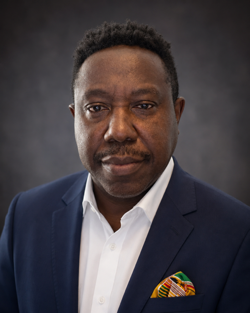
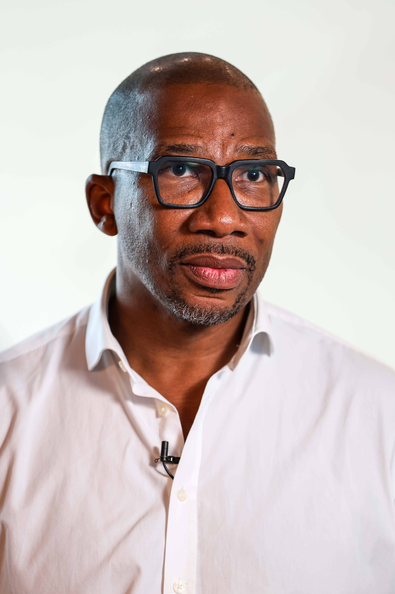
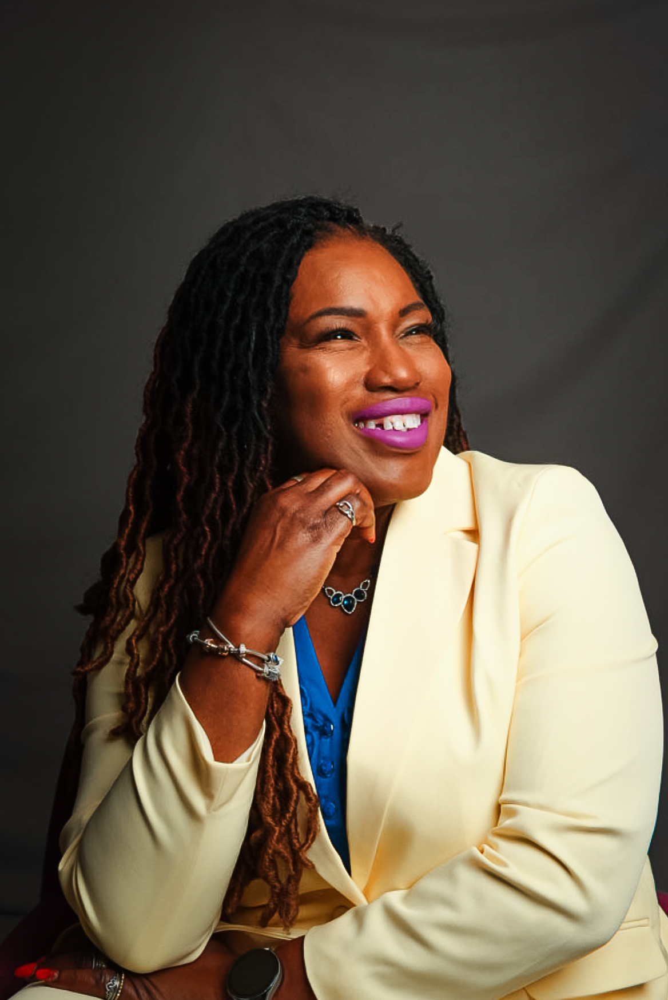
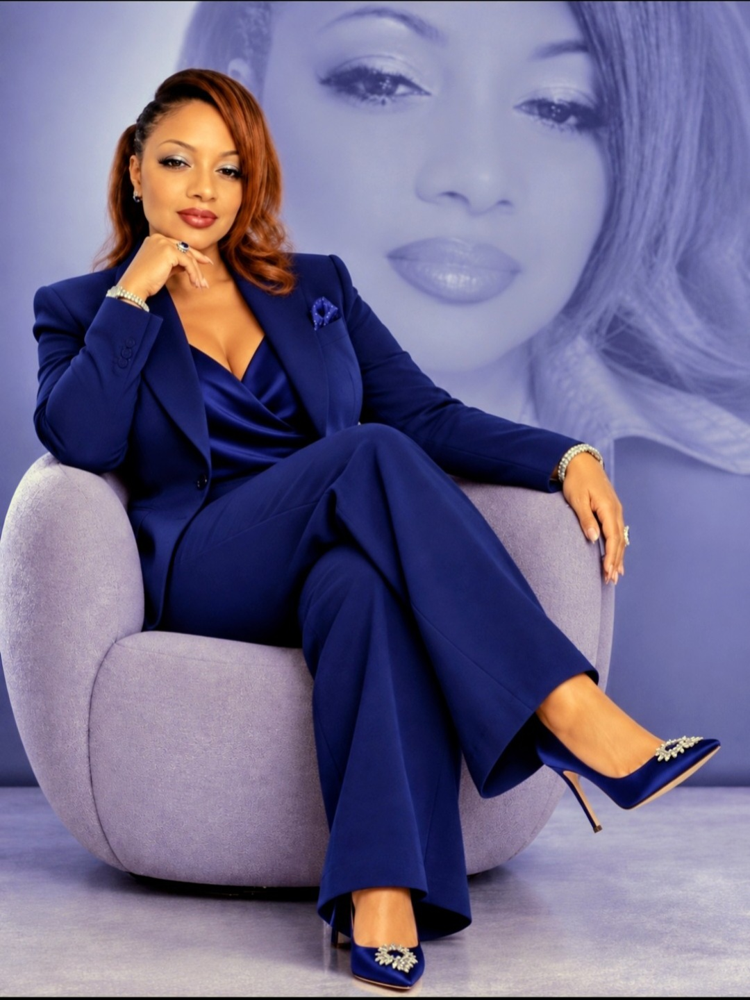
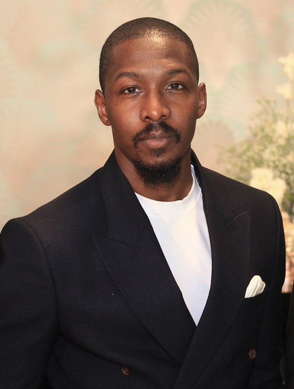

Confirmed Speakers
Meet some of the distinguished voices participating in the 2026 programme, selected for the strength of their ideas, experiences and potential contribution to meaningful conversations


A distinguished military leader and counter-insurgency specialist with nearly four decades of experience. As Nigeria's 17th Chief of Defence Staff, he led major counter-terrorism campaigns against Boko Haram, helping secure the release of over 20,000 abducted civilians, including the Chibok schoolgirls. He is author of SCARS: Nigeria's Journey and the Boko Haram Conundrum.
Learn More
A multi-award-winning leadership reinvention coach, consultant, lawyer, best-selling author and global technology transformation leader with over 25 years of experience. As founder of The Reinvent YOU Experience, she helps high-achieving women reinvent their influence, impact and income.
LinkedIn

Known as the "Toghu Marathoner," Afowiri is a Cameroonian philanthropist, autism advocate, and founder of the AMOM Foundation. He holds the Guinness World Records title for the fastest marathon wearing Toghu and is an Abbott World Marathon Majors Six-Star Finisher. Through AMOM, his initiatives have reached approximately 20,000 children in Cameroon.
LinkedIn
Chief Executive of the Aleto Foundation and founder of Think DV Consulting Ltd, specialising in leadership, mentoring and strategic consultancy. Under his leadership, Aleto has supported more than 1,500 young people from underrepresented backgrounds. He was awarded the British Empire Medal for services to young people.
LinkedInA student leader, community advocate and emerging youth voice passionate about leadership and personal development. With over 100 hours of community service, her message centres on encouraging young people to recognise their potential and embrace responsibility.

Associate Professor of Public Health and Social Justice at the University of the West of England Bristol. She developed the Transformative Multicultural Classroom model, achieving pass rates of up to 100% and adopted by multiple UK institutions. She is co-founder of the Safe Space Initiative for Black women in academia.
LinkedInA distinguished public health leader specialising in health systems strengthening, policy development and communication. Co-founder of STLC, a youth leadership organisation that has empowered over 10,000 young people and women across six Nigerian states. She currently serves as Director of Public Health in the FCT Health Services and Environment Secretariat.
LinkedIn
An author, integrative counsellor and psychotherapist, and Founder of SAB Counselling Service Ltd. Her trauma-informed, attachment-focused practice supports individuals, couples and families, with particular expertise in relationships and neurodivergence. She is the author of Love Without Disappearing.
LinkedIn
A Nigerian entrepreneur and technology executive focused on building systems that make trust easier, as Co-founder and CEO of ToNote. He played a key role in advocating for reforms behind Nigeria's Evidence Act 2023 and Notaries Public Act 2023. ToNote now serves as the Supreme Court of Nigeria's implementation partner for the national notarial framework.
LinkedIn
A communications and sustainability strategist, storyteller, and founder of TAMJAB, a boutique consultancy helping purpose-driven organisations communicate with clarity and impact. She describes her approach as "Human Currency" — the value created when stories move beyond visibility to build meaningful human connection.
LinkedInA two-time World and four-time European Karate Champion, former Great Britain Women's Team Captain, and founder of JFI Karate Academy. Through her C.H.A.M.P.I.O.N Methodology, she uses karate and life skills to help children develop confidence, resilience and positive thinking.
LinkedInKnown as Kay Elise, a London-based entrepreneur, author, creative producer and academic lecturer whose journey spans seven businesses and seven published titles, including K&K Brides Magazine — the first Black bridal magazine on the UK market.
LinkedIn